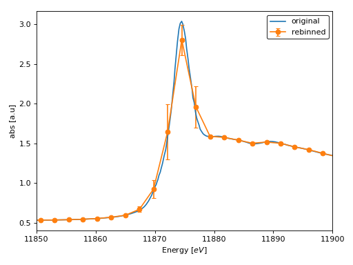
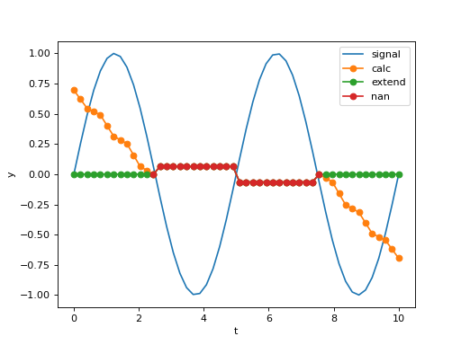

Signal module¶
The signal module offers the following
functions to filter and analyze univariate data:
Function |
Description |
|---|---|
Computes bin sequence for an energy array. |
|
Rebins XAFS spectra in a group. |
|
Rolling median of a 1-D array. |
- araucaria.stats.signal.compute_bins(ref_energy, e_step=0.5, bkg_pars=[- 300, - 20, 5], exafs_pars=[3, 15, 0.05], ndigits=4)[source]¶
Computes bin sequence for an energy array.
- Parameters
ref_energy (
float) – Reference energy for computing bins (eV). Both background range and exafs range are computed with respect to this value.e_step (
float) – Energy increment step for XANES bins (eV). The default is 0.5.bkg_pars (
list) – Parameters for background bins (eV). Should include initial energy value, final energy value, and energy increment step. The detault is [-300, -20, 5]exafs_pars (
list) – Parameters for EXAFS bins (inverse angstrom). Should include initial k value, final k value, and k increment step. The default is [3, 15, 0.05].ndigits (
int) – Number of decimal places to round bins. The default is 4.
- Return type
- Returns
Array with bin edges.
- Raises
ValueError – If len of
bkg_parsorexafs_parsis smaller than 3.
See also
rebin()Rebins spectra in a group.
Notes
Computation of bins is performed considering 3 regions:
background region: defined by
bkg_pars.XANES region: defined between
bkg_pars,exafs_pars, ande_step.EXAFS region: defined by
exafs_pars
Bin sizes are adjusted between regions in order to follow the energy limits established by
bkg_parsandexafs_ pars.Example
>>> from numpy import around, allclose >>> from araucaria.stats import compute_bins >>> from araucaria.xas import ktoe >>> ndigits = 4 >>> edge = 7112 >>> bkg_pars = [-300, -50, 10] >>> exafs_pars = [2, 10, 0.05] >>> bin_edges = compute_bins(ref_energy=edge, bkg_pars=bkg_pars, ... exafs_pars=exafs_pars, ndigits=ndigits) >>> # verifying bin edges >>> minval = edge + bkg_pars[0] - bkg_pars[2]/2 # minimum bin edge value >>> maxval = edge + ktoe(exafs_pars[1] + exafs_pars[2]/2) # maximum bin edge value >>> vals = around((minval, maxval), ndigits) # rounding to ndigits >>> allclose((bin_edges[0], bin_edges[-1]), vals) True
- araucaria.stats.signal.rebin(group, statistic='mean', bins=10, remove_nans=True, update=False)[source]¶
Rebins XAFS spectra in a group.
- Parameters
group (
Group) – Group containing the spectrum to rebin.statistic (
str) – The statistic to compute for rebinning. Seebinned_statistic()for valid names. The default is ‘mean’.bins (
Union[int,list]) – Ifint, it defines the number of equal-width bins in the given range. If a sequence, it defines the bin edges, including the rightmost edge, allowing for non-uniform bin widths. The default is 10.remove_nans (
bool) – Indicates if bins withnanvalues should be removed. The default is True.update (
bool) – Indicates if the group should be updated with the rebin attributes. The default is False.
- Return type
- Returns
Dictionary with the following parameters:
energy: rebinned energy values.mu: rebinned transmission \(\mu(E)\), ifmuattribute exists in the group.fluo: rebinned fluorescence \(\mu(E)\), iffluoattribute exists in the group.mu_ref: rebinned reference \(\mu(E)\), ifmu_refattribute exists in the group.rebin_stats: additional rebin statistics.
- Raises
TypeError – If
groupis not a valid Group instance.AttributeError – If attribute
energydoes not exist ingroup.
Important
Bins with no data are removed by default to prevent
nanvalues in the rebinned group arrays. As a consecuence , the total number of bins might be smaller than originally specified, and bins will exhibit varying width.You can override this default behavior by specifying
remove_nans=False.Example
>>> from araucaria import Group >>> from araucaria.testdata import get_testpath >>> from araucaria.io import read_xmu >>> from araucaria.stats import rebin >>> from araucaria.utils import check_objattrs >>> fpath = get_testpath('xmu_testfile.xmu') >>> # extracting mu and mu_ref scans >>> group_mu = read_xmu(fpath, scan='mu') >>> bins = 600 # number of bins >>> regroup = group_mu.copy() # rebinning copy of group >>> rebin = rebin(regroup, bins=bins, update=True) >>> attrs = ['energy', 'mu', 'mu_ref', 'rebin_stats'] >>> check_objattrs(regroup, Group, attrs) [True, True, True, True]
>>> # plotting rebinned spectrum >>> from araucaria.plot import fig_xas_template >>> import matplotlib.pyplot as plt >>> figpars = {'e_range' : (11850, 11900)} # energy range >>> fig, ax = fig_xas_template(panels='x', fig_pars=figpars) >>> stdev = regroup.rebin_stats['mu_std'] # std of rebinned mu >>> line = ax.plot(group_mu.energy, group_mu.mu, label='original') >>> line = ax.errorbar(regroup.energy, regroup.mu, yerr=stdev, marker='o', ... capsize=3.0, label='rebinned') >>> leg = ax.legend(edgecolor='k') >>> lab = ax.set_ylabel('abs [a.u]') >>> plt.show(block=False)
(Source code, png, hires.png, pdf)

{kind=link}
{kind=link}
- araucaria.stats.signal.roll_med(data, window, min_samples=2, edgemethod='nan')[source]¶
Computes the rolling median of a 1-D array.
- Parameters
data (
ndarray) – Array to compute the rolling median.window (
int) – Size of the rolling window for analysis.min_samples (
int) – Minimum sample points to calculate the median in each window. The default is 2.edgemethod (
str) – Dictates how medians are calculated at the edges of the array. Options are ‘nan’, ‘calc’ and ‘extend’. See the Notes for further details. The default is ‘nan’.
- Return type
- Returns
Rolling median of the array.
- Raises
ValueError – If
windowis not an odd value.ValueError – If
windowis smaller or equal than 3.TypeError – If
windowis not an integer.ValueError – If
edgemethodis not recognized.
Notes
This function calculates the median of a moving window. Results are returned in the index corresponding to the center of the window. The function ignores
nanvalues in the array.edgemethod='nan'usesnanvalues for missing values at the edges.edgemethod='calc'uses an abbreviated window at the edges (e.g. the first sample will have (window/2)+1 points in the calculation).edgemethod='extend'uses the nearest calculated value for missing values at the edges.
Warning
If
windowis less thanmin_samples,nanis given as the median.Example
>>> from numpy import pi, sin, linspace >>> from araucaria.stats import roll_med >>> import matplotlib.pyplot as plt >>> # generating a signal and its rolling median >>> f1 = 0.2 # frequency >>> t = linspace(0,10) >>> y = sin(2*pi*f1*t) >>> line = plt.plot(t,y, label='signal') >>> for method in ['calc', 'extend', 'nan']: ... fy = roll_med(y, window=25, edgemethod=method) ... line = plt.plot(t, fy, marker='o', label=method) >>> lab = plt.xlabel('t') >>> lab =plt.ylabel('y') >>> leg = plt.legend() >>> plt.show(block=False)
(Source code, png, hires.png, pdf)

{kind=link}
{kind=link}